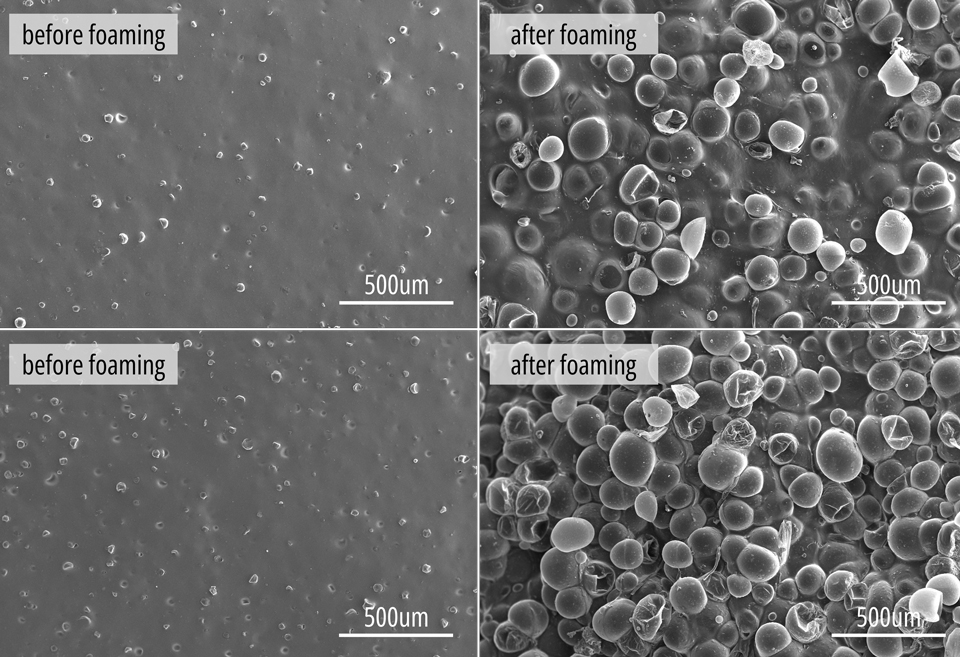
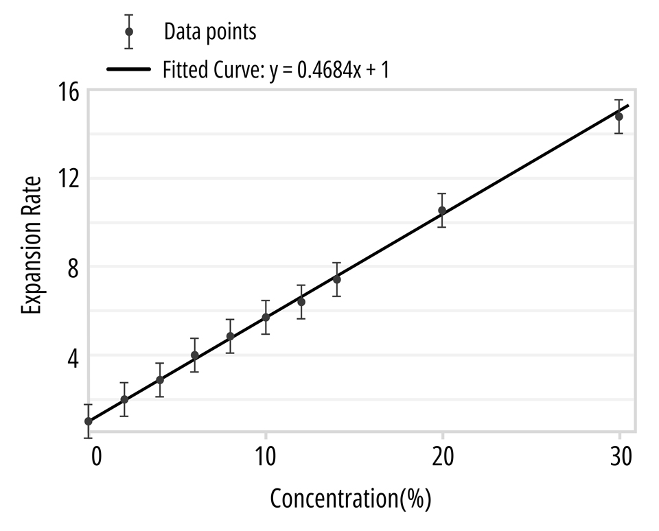
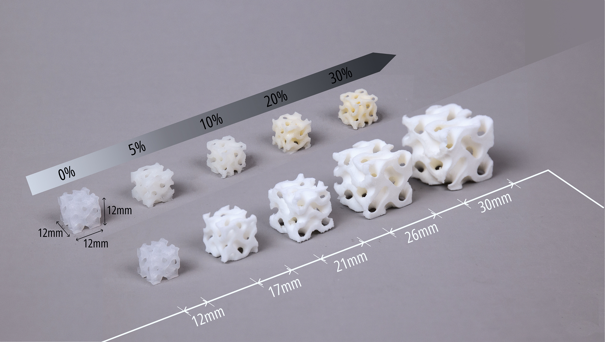
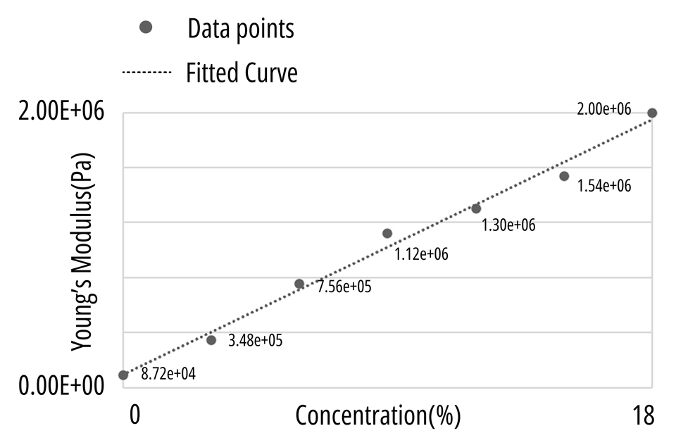
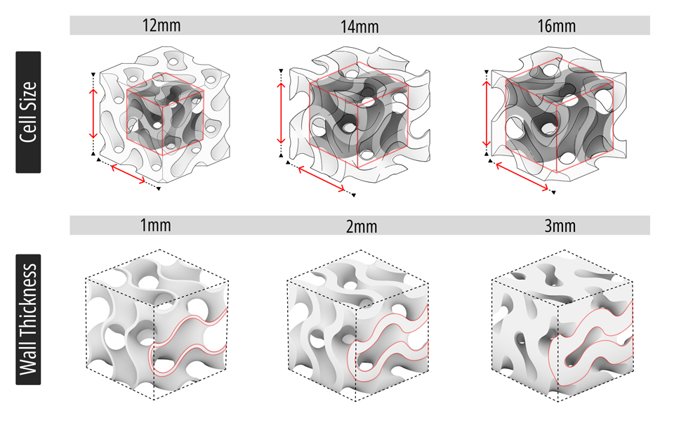
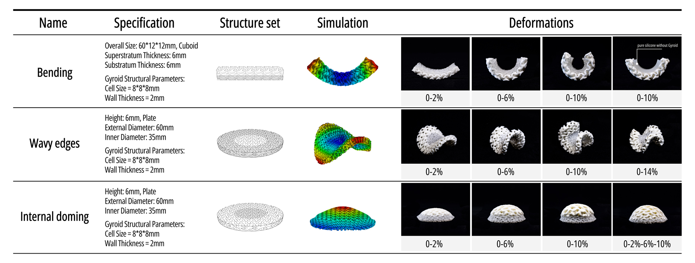

Stiffness & Morphing
The most distinctive features of GyFoam is its ability to expand when heated. Building on this property, to further support personalized designs, we propose two stiffness tuning approaches—adjusting material concentration and lattice structural parameters-and three deformation control strategies—bending, wavy edges and internal doming.
We used a scanning electron microscope (SEM, SU-70, Hitachi, Japan; 150 kV) to acquire the morphology characterization of different samples before and after foaming. From a microscopic perspective, the TEMs are uniformly distributed throughout the silicone matrix, with no obvious signs of local agglomeration. After heating, the microspheres undergo significant volumetric expansion, occupying the space originally filled by pure silicone.

The SEM images clearly reveal that the macroscopic expansion of the GyFoam composite is primarily driven by the thermal expansion of TEM. We investigated the relationship between composite concentration and expansion ratio. The results showed a positive correlation between the expansion ratio of TEM-silicone composite and its concentration. Through data fitting, we obtained a linear relationship as shown in the figure. This study of expansion ratio helps us calibrate parameters in our software tools to match physical variables and control the final deformation results.
where K represents the Expansion Rate


Through extensive experimentation, we have developed a more scientifically rigorous stiffness prediction model that differs from the one presented in our paper. We have consulted domain experts and conducted multiple iterations of experiments to continuously calibrate and optimize the model. Our goal is to provide researchers and makers with a more reliable stiffness prediction model, enabling customized mechanical properties fabricated through GyFoam method.
In this section, users can utilize our interactive features to adjust the concentration and Gyroid structural parameters of GyFoam material according to their needs, obtaining predicted stiffness values. We also provide detailed modeling approaches and methodologies in the following sections.
Our stiffness prediction model considers three key parameters: TEM concentration, cell size, and wall thickness. Using the interactive tool below, you can input these parameters to predict the stiffness value of GyFoam.
Stiffness Prediction Calculator
Predicted Stiffness:
Calculating...
Note: This model is based on experimental data fitting.
Additionally, the cell size and wall thickness must satisfy the inequality relationship: Cell Size - 2 * Wall Thickness > 2.
The expansion of TEM significantly alters the mechanical properties of GyFoam composite material by occupying space originally filled with silicone, thereby affecting its stiffness. As a result, the composite concentration directly influences material rigidity. We conducted research on composite concentration to explore the quantitative relationship between concentration and material stiffness. Using Young's modulus as a material-specific stiffness indicator independent of structure, we analyzed experimental data as shown in the figure and derived a quantitative relationship between concentration and Young's modulus.
where E represents Young's modulus (Pa)

The Gyroid structural parameters include cell size and wall thickness. Through controlled variable experiments, we studied how cell size and wall thickness affect material stiffness. Our findings show that stiffness gradually increases as the cell size decreases. Similarly, increasing wall thickness leads to higher stiffness. Based on our experimental data and research in mechanical engineering and materials science regarding lattice structures' mechanical properties, we fitted the data to establish a stiffness prediction model that correlates with both cell size and wall thickness.
where S* represents predicted stiffness, E represents Young's modulus of material under selected concentration

We have developed an interactive stiffness prediction tool that allows users to predict stiffness values by adjusting lattice cell size and wall thickness parameters. This tool helps users better understand and control stiffness variations for different design and manufacturing applications.
This deformation strategy utilizes differential expansion between two layers: upon heat activation, the higher-concentration layer undergoes greater expansion, serving as the driving layer, while the lower-concentration layer acts as a restricting layer, resisting deformation and generating controlled bending moments. Our deformation library illustrates how the concentration of the driving layer influences the degree of bending.
We present a structure in which the inner ring has a lower composite concentration, while the outer ring has a higher concentration. During expansion, the outer ring is constrained and stretched by the inner ring, resulting in periodic wavy edges. By adjusting the composite concentrations and geometric dimensions, we can achieve wavy edges with varying amplitudes and wave counts.
In contrast to wavy edges, internal doming is achieved by reversing the concentration distribution. The inner region, with its higher expansion capability, is constrained by the surrounding structure, preventing lateral expansion and instead forcing upward deformation into a vertical dome shape. Our library showcases various internal doming effects resulting from different concentration gradients, illustrating a diverse range of dome heights and shapes.
